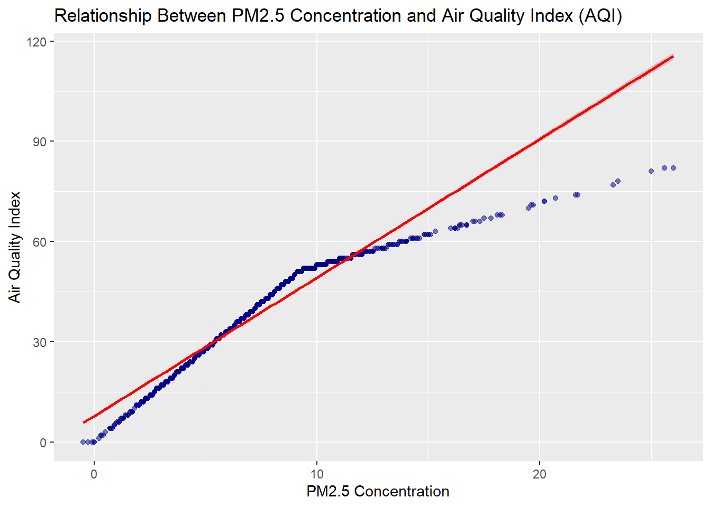

Blog 3: Backgrond and Data Analysis(summary, barplots, tables)
Preliminary Data Analysis, data background, and barplots for continuous variable, and tables for discrete variables.
Author
Background: Cat Mahoney, Yana Pathak. Data Analysis: Jiaxuan Li, Girish Hrithik Shivnauth, Xiaolong Zhou
Published
March 24, 2025
Data Background
The EPA AirData project tracks air quality in the US, collecting data on pollutants that are linked to serious health risks. Specifically PM2.5 particles. These small particles, primarily from fossil fuel combustion and atmospheric chemical reactions, are known to impair lung function and increase cancer risks. The 2024 study in Nature Communications (https://www.nature.com/articles/s41467-023-43492-9), showed in class, analyzed US air pollution trends from 1970 to 2010, showing that there were reductions in pollution due to efforts like the Clean Air Act. It also showed disparities, specifically how pollutant exposure varies by socioeconomic factors, as some communities experience slower improvements. Our study examines Boston’s PM2.5 levels using data from Roxbury, Kenmore Square, and Dorchester to focus on local trends. We are extending the timeline to the present, as we aim to identify emerging disparities and evaluate the continued effectiveness of air quality regulations.
Data Analysis
Daily Mean PM2.5 Concentration The Daily Mean PM2.5 Concentration is a key indicator of air quality. Based on our data, the average concentration is 6.801712 μg/m³, with a median of 6.3 μg/m³. The values range from 42.33 to 42.35, and the standard deviation is 3.264045. The interquartile range (IQR) is 3.9, showing the spread of the middle 50% of the data.
The Site Latitude The Site Latitude values describe the north-south positioning of the air quality monitoring sites. The latitudes range from -71.10 to -71.06, with a mean of -42.33273 and median of 42.3295. This indicates that the stations are located across a wide vertical geographical spread.The standard deviation is 0.02368671, and the IQR is 0.02368671, suggesting varying coverage in the north-south direction.
The Site Longitude The Site Longitude captures the east-west geographic spread of monitoring sites. The mean longitude is -71.07442, median is -71.0826, and the values range from -71.09716 to -71.05606. The standard deviation is 0.01762767.
# 1. Scatter plot of PM2.5 vs AQI valueggplot(epa_data, aes(x =`Daily Mean PM2.5 Concentration`, y =`Daily AQI Value`)) +geom_point(alpha =0.5, color ="darkblue") +geom_smooth(method ="lm", color ="red") +labs(title ="Relationship Between PM2.5 Concentration and Air Quality Index (AQI)",x ="PM2.5 Concentration",y ="Air Quality Index")
`geom_smooth()` using formula = 'y ~ x'

Scatter plot of PM2.5 vs AQI value This scatter plot shows the relationship between the daily average concentration of PM2.5 (X-axis) and the corresponding Air Quality Index (AQI) value (Y-axis). Each blue dot represents a day’s measurement. The red line is a linear regression line showing the overall trend. The strong positive correlation visible in this graph shows that as PM2.5 concentrations increase, AQI values also increase in a predictable manner. This relationship is to be expected, as PM2.5 is the main component in calculating AQI values.
# 2. Bar chart of PM2.5 by month (seasonal patterns)epa_data <-readRDS("dataset/air_qual_clean.rds")head(epa_data$Date)
epa_data$Date <-as.Date(epa_data$Date)epa_data$Month <-as.numeric(format(epa_data$Date, "%m"))monthly_avg <- epa_data |>group_by(Month) |>summarize(avg_pm25 =mean(`Daily Mean PM2.5 Concentration`, na.rm =TRUE))ggplot(monthly_avg, aes(x =factor(Month), y = avg_pm25)) +geom_bar(stat ="identity", fill ="darkgreen") +labs(title ="Monthly Variation in PM2.5 Concentration",x ="Month",y ="Average PM2.5 Concentration") +scale_x_discrete(labels = month.abb)
Bar chart of PM2.5 by month (seasonal patterns) This bar chart shows the average PM2.5 concentration for each month of the year. The X-axis shows the month and the Y-axis shows the average concentration of PM2.5. This visualization reveals seasonal patterns of air pollution. You can see which months typically have higher or lower PM2.5 levels. Typically, the winter months show higher concentrations due to increased heating and temperature inversions of trapped pollutants, while the summer months may have lower concentrations.
# 3. Bar chart of observation count by monitoring methodmethod_counts <- epa_data |>group_by(`Method Description`) |>summarize(count =n()) |>arrange(desc(count))ggplot(head(method_counts, 10), aes(x =reorder(`Method Description`, count), y = count)) +geom_bar(stat ="identity", fill ="purple") +coord_flip() +labs(title ="Frequency of Monitoring Methods (Top 10)",x ="Monitoring Method",y ="Number of Observations")
<<<<<<< HEAD 3. Bar chart of observation count by monitoring method This bar chart shows the ten most commonly used methods for monitoring PM2.5 concentrations. The Y-axis lists the different monitoring method descriptions, and the X-axis shows the count of observations made using each method. This visualization is important for understanding data collection methods. Different monitoring methods may have different levels of accuracy, detection limits, or biases. Datasets dominated by one or both methods provide more consistent measurements, while more diverse method sets may introduce variability that needs to be taken into account when interpreting results.
discrete_vars <-sapply(epa_data, function(x) is.factor(x) ||is.character(x) ||is.logical(x))discrete_data <- epa_data[, discrete_vars]ggplot(epa_data, aes(x =`Local Site Name`)) +geom_bar(fill ="steelblue") +labs(title ="Distribution of Air Quality Event Types",x ="Local Site Name", y ="Count")
This is a picture that shows the different number of locations throughout 2020. As we can see RoxBury and Boston Kenmore SQ are even, which is about 450, and Von Hillern Street has about 800 different locations for Air quality values.